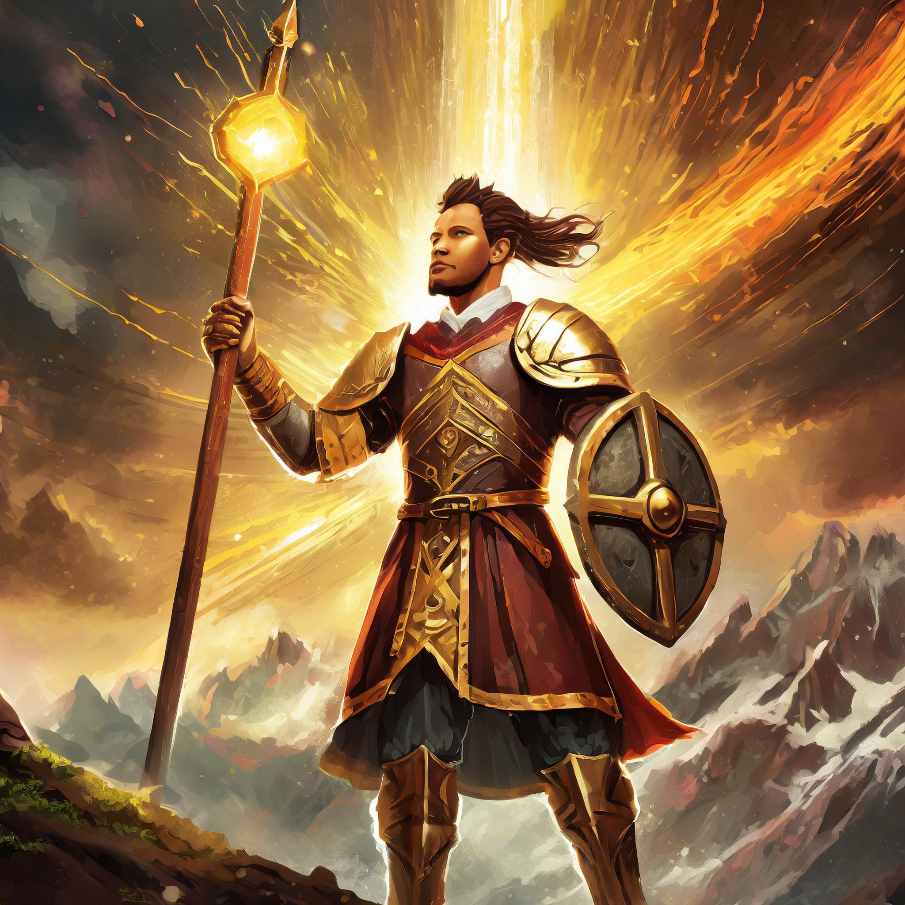
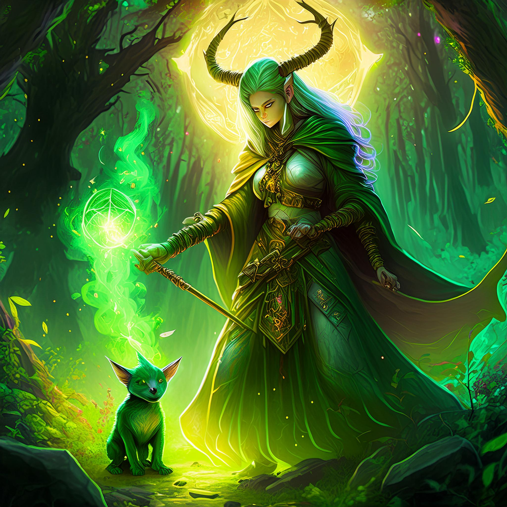
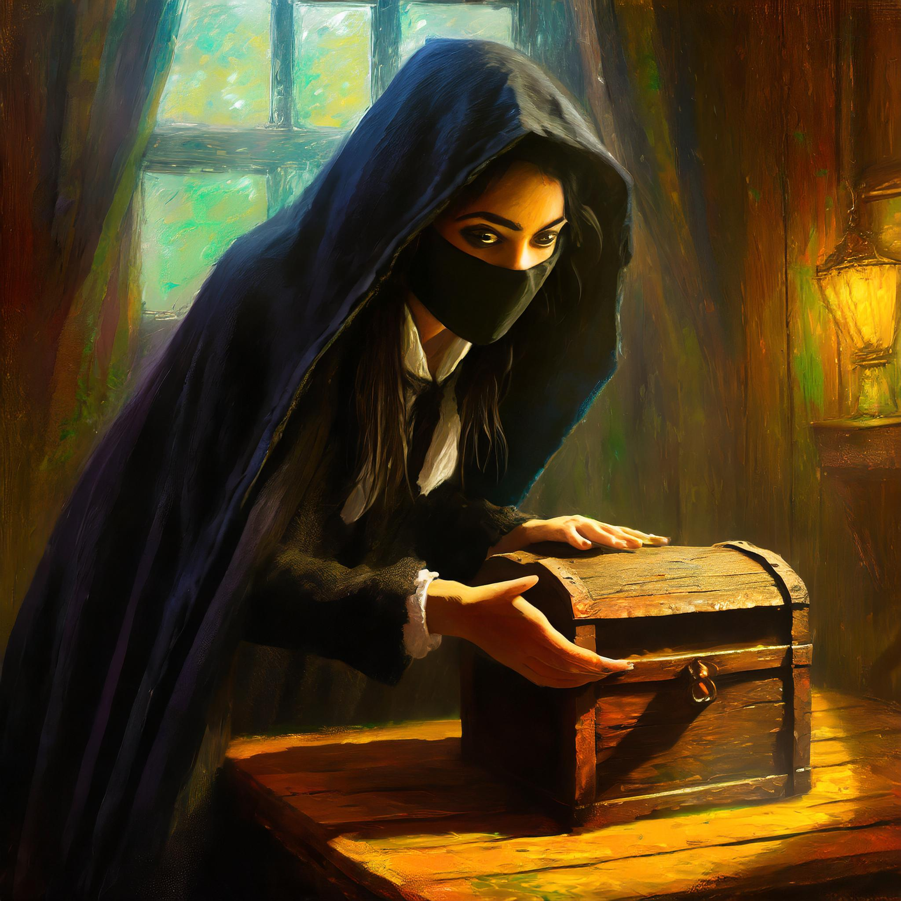

My Favorite D&D Classes

Paladins
Whatever their origin and their mission, paladins are united by their oaths to stand against the forces of evil. Whether sworn before a god’s altar and the witness of a priest, in a sacred glade before nature spirits and fey beings, or in a moment of desperation and grief with the dead as the only witness, a paladin’s oath is a powerful bond. It is a source of power that turns a devout warrior into a blessed champion.

Warlocks
Warlocks are seekers of the knowledge that lies hidden in the fabric of the multiverse. Through pacts made with mysterious beings of supernatural power, warlocks unlock magical effects both subtle and spectacular. Drawing on the ancient knowledge of beings such as fey nobles, demons, devils, hags, and alien entities of the Far Realm, warlocks piece together arcane secrets to bolster their own power.

Rogues
Rogues rely on skill, stealth, and their foes’ vulnerabilities to get the upper hand in any situation. They have a knack for finding the solution to just about any problem, demonstrating a resourcefulness and versatility that is the cornerstone of any successful adventuring party.